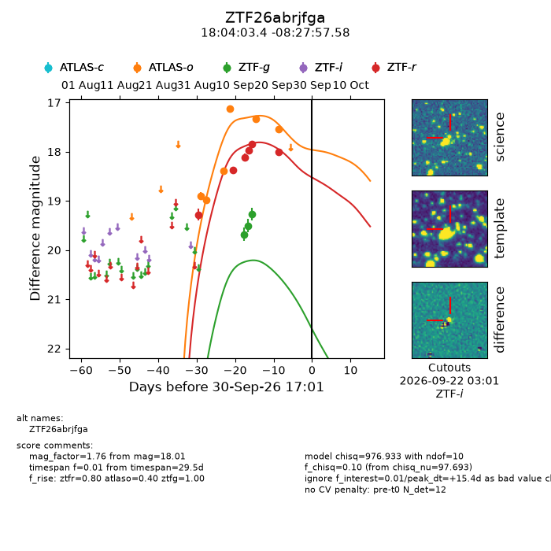
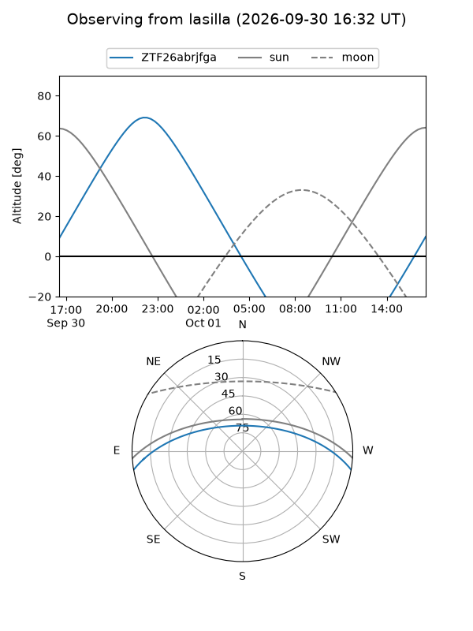
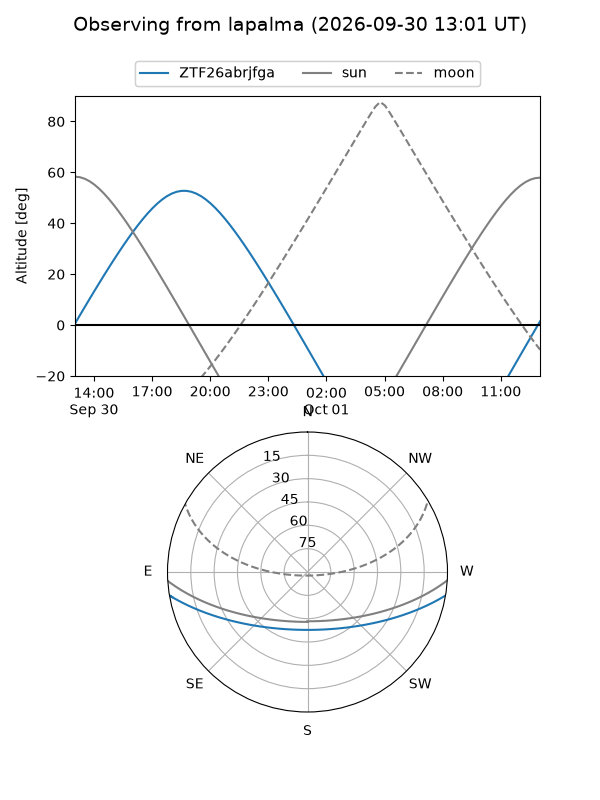
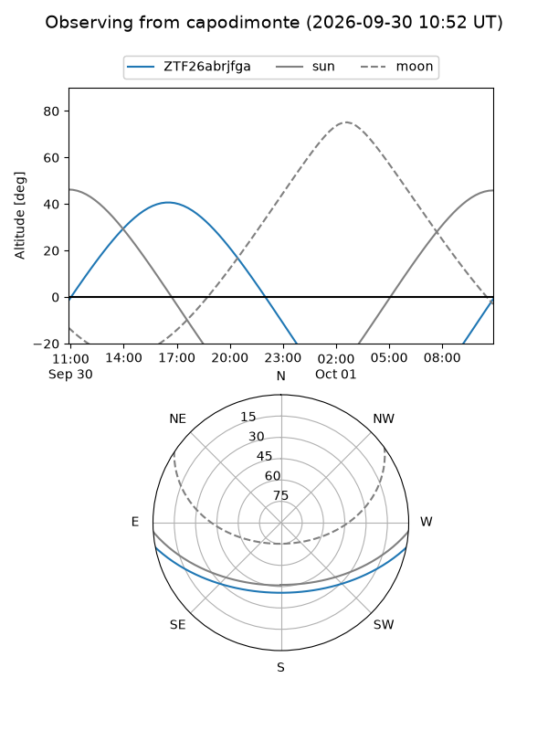
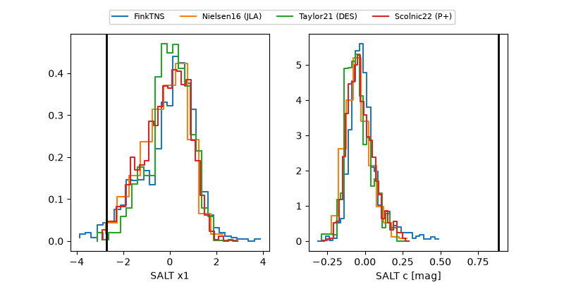

ZTF26abrjfga
Target ZTF26abrjfga at 2026-10-01 04:33
Aliases and brokers:
FINK-ZTF: ztf.fink-portal.org/ZTF26abrjfga
Lasair-ZTF: lasair-ztf.lsst.ac.uk/objects/ZTF26abrjfga
ALeRCE-ZTF: alerce.online/object/ZTF26abrjfga
Direct TNS query: direct search
alt names
ZTF26abrjfga (ztf,fink_ztf)
Coordinates:
equatorial (ra, dec) = 271.0142,-8.46599
equatorial (HMS+DMS) = 18:04:03.40,-08:27:57.58
galactic (l, b) = (19.9254,+6.52093)
Flags:
peak dt: +15.9
Photometry:
last atlaso=17.54, ztfg=19.26, ztfr=18.01
6 atlaso, 3 ztfg, 6 ztfr detections
Lightcurve

Visibility



Additional plots
